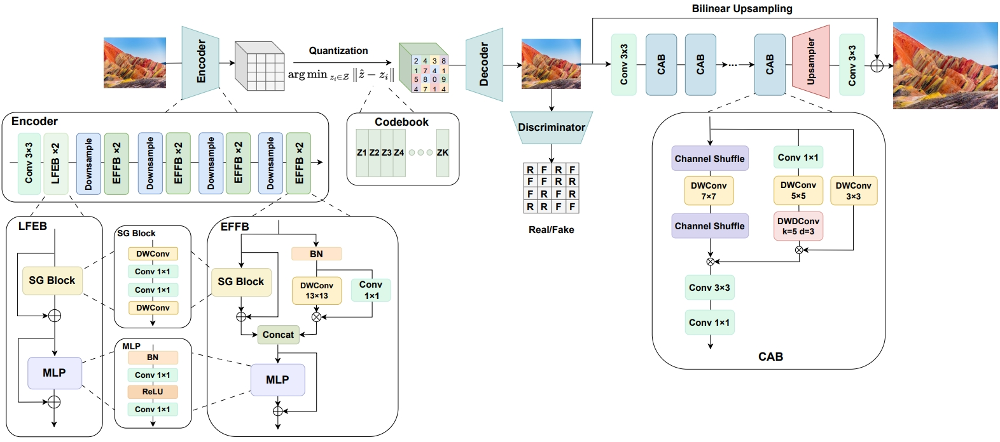
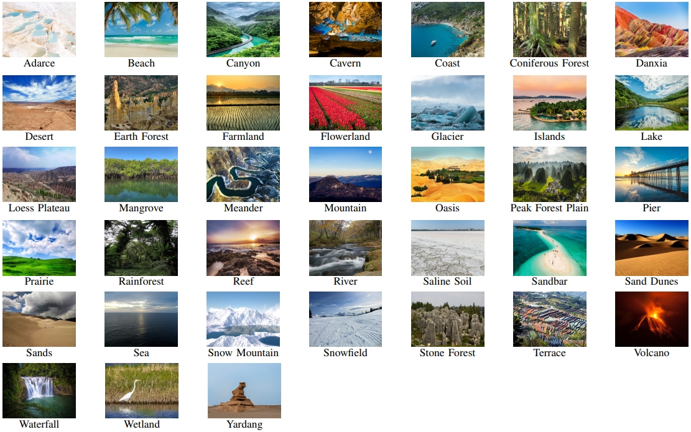
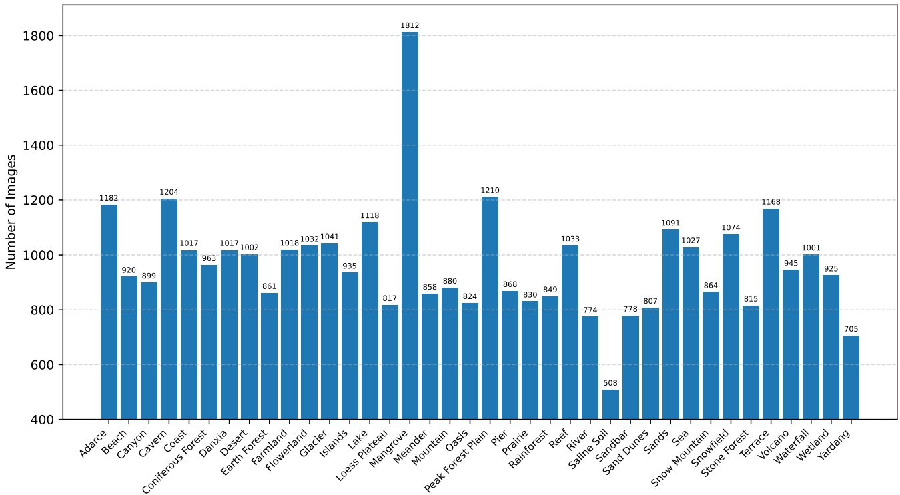
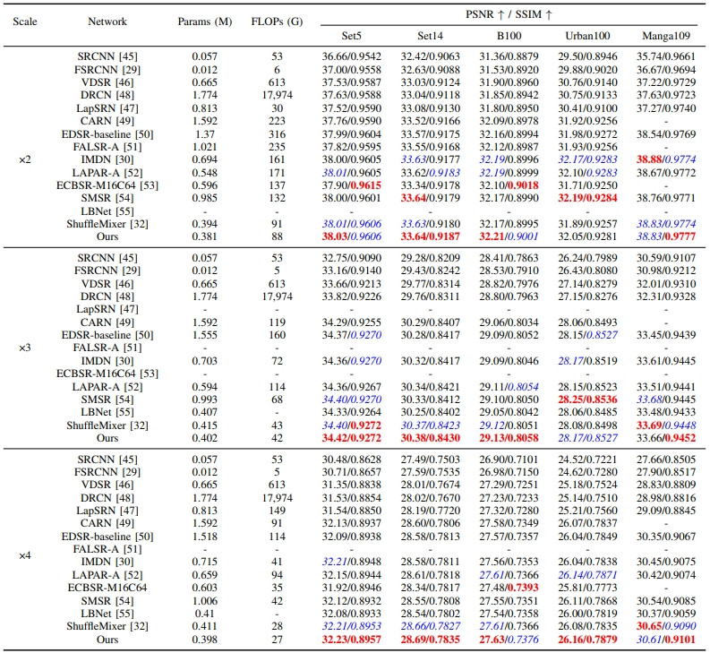
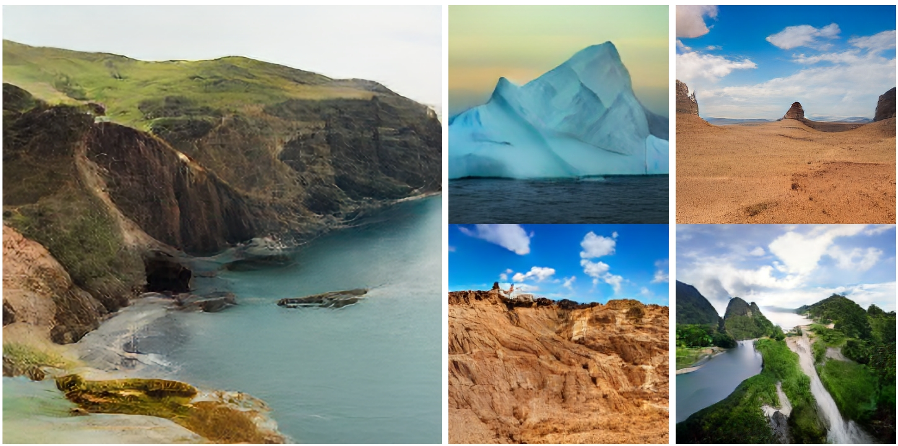

Terrain Scene Generation Using A Lightweight Vector Quantized Generative Adversarial Network
|  |
The architecture of the proposed Lit-VQGAN, which consists of a lightweight VQGAN built on top of two types of lightweight blocks, including the LFEB and the EFFB, and a lightweight super-resolution network, which is adopted using a set of Complex Attention Blocks (CABs).
Abstract
Natural terrain scene images play important roles in the geographical research and application. However, it is
challenging to collect a large set of terrain scene images. Recently, great progress has been made in image generation. Although
impressive results can be achieved, the efficiency of the state-of-the-art methods, e.g., the Vector Quantized Generative Adversarial Network (VQGAN),
is still dissatisfying. The VQGAN confronts two issues, i.e., high space complexity and heavy computational demand. To efficiently fulfill the terrain scene
generation task, we first collect a Natural Terrain Scene Data Set (NTSD), which contains 36,672 images divided into 38 classes.
Then we propose a Lightweight VQGAN (Lit-VQGAN), which uses the fewer parameters and has the lower computational
complexity, compared with the VQGAN. A lightweight super resolution network is further adopted, to speedily derive a high resolution image from the image that the Lit-VQGAN generates.
The Lit-VQGAN can be trained and tested on the NTSD. To our knowledge, either the NTSD or the Lit-VQGAN has not been exploited before. Experimental results show that the Lit-VQGAN is more efficient and effective than the VQGAN for the
image generation task. These promising results should be due to
the lightweight yet effective networks that we design.
Links

Natural Terrain Scene Data Set (NTSD)

Statistics of the Data Set

The number of the images contained in each of the 38 classes of the Natural Terrain Scene Data Set (NTSD).
Experimental Results
|  |
Quantitative Results of our lightweight super-resolution network and 14 baselines on five benchmark data sets.

|
| |
|  |
| |
The natural terrain scene image reconstruction results derived using three VQGAN networks. And Examples of the high-resolution images generated by our method.